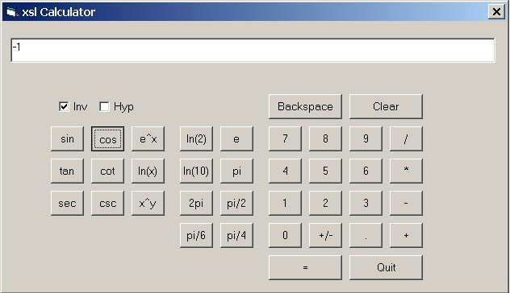
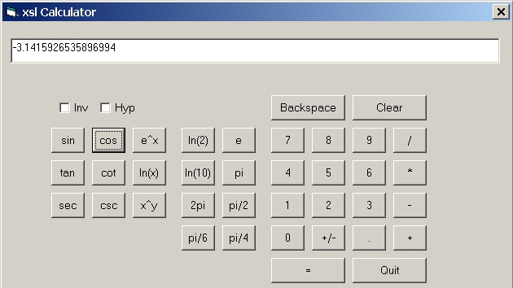

|
|
An XSL Calculator: The Math Modules of FXSL
Dimitre Novatchev, April-May 2002
This article is a follow-up from three recent publications [1], [2], [3] on functional programming in XSLT. Described are various new modules of the XSLT functional programming library FXSL [4], which implement trigonometric and hyperbolic-trigonometric, exponential and logarithmic functions and their reverse functions. Also implemented are two general methods of solving equations of one real variable. These are used within an XSLT Calculator - an interactive XSLT application driven entirely by a single stylesheet, which depends on an external object for its IO. The code of the implementation demonstrates the use of such powerful, functional programming design patterns as partial application and creation of functions dynamically.
This article is dedicated to Trace Wilson, the webmaster of TopXML.com, who has helped me enormously in editing and publishing the first three articles about the FXSL library.
Downloads:
The XSL Calculator specific download is here
In order to run the XSL Calculator you'll also need MSXML4 and the MSXML edition of FXSL.The source code described in this article is part of the FXSL library version 1.1 and can be downloaded here:
Using MSXML? Get the MSXML source code!
Using SAXON? Get the SAXON source code!
Using XALAN? Get the XALAN source code as adapted by Knut Wannheden !
Introduction
Until now the predominant belief has been that XSLT is not a full-blown programming language and using extension functions is the only way to perform "unsuitable tasks" such as calculating the values of various math functions, performing numerical differentiation and integration, solving equations, random number generation, text processing, etc. Another popular belief is that it is impossible to have completely stand-alone XSLT applications, which can lead their own continuous interactive dialog with the user while performing their tasks.
People are now gradually starting to understand that such beliefs are wrong. The previous three publications [1], [2], [3] about FXSL [4] show that it is possible to perform such tasks within an XSLT transformation without resorting to extension functions written in another programming language.
The purpose of this article is to introduce the math modules of FXSL and to demonstrate their use within a standalone interactive XSLT Calculator program.
The Trigonometric Functions
Why would one need trigonometric functions in an XSLT transformation? There are a number of cases these might be needed. One example is when a transformation must produce SVG output for drawing a pie chart [5].
The following trigonometric functions have been implemented in the trignm.xsl module:
|
Functions |
Parameters |
|
sin() -- the sinus function cos() -- the co-sinus function |
pX - the angle specified in radians or degrees pUnit - [optional] the measurement unit of the
given pEps - [optional] accuracy required -
increase |
|
tan() -- the tangent function cot() -- the cotangent function | |
|
sec() -- the secant function csc() -- the cosecant function |
The source code is presented bellow. The well-known Taylor power series is used for calculating the sin() function:
x3 x5 x7
sin x = x
- --- +
--- - --- + ...
for any real
x
3! 5! 7!
It is the most natural approach to use a recursive named template to calculate every next partial sum, and the only things to note are the following:
The alternating sign of the elements of the series could pause a problem and in a naïve implementation the sign could be passed as a separate parameter. This would slow down the calculations. In our implementation the next element of the series is calculated in the following, more efficient way:
<xsl:variable name="vnewElem" select="-$pElem*$pX2 div ($vnextN*($vnextN - 1))"/> |
We are using a common prologue-wrapper, which is called to perform once-only initialization for all of the functions. A typical use of the wrapper looks like this:
<xsl:call-template name="_trigWrapper"> <xsl:with-param name="pFun" select="$x:vstTop/trigSin:*[1]"/> <xsl:with-param name="pX" select="$pX"/> <xsl:with-param name="pUnit" select="$pUnit"/> <xsl:with-param name="pEps" select="$pEps"/> </xsl:call-template> |
The _trigWrapper first converts x to radians, in case the value of the pUnit parameter is not 'rad'. It then invokes the appropriate function body.
A naïve implementation will not distinguish the case when the absolute value of x is too large and will calculate the Taylor series to the specified accuracy. However, when |x| is big, a very big number of iterations is required to calculate the value of the function to the desired accuracy. In our implementation we are calling an auxiliary template named _cutIntervals, which scales x to a value x' in the interval [0, 2*pi], so that sin(x) = sin(x').
We do not calculate any other Taylor series for the rest of the functions, using instead the following well-known trigonometric identities:
pi
cos(x) = sin(--- -
x)
2
sin(x)
tan(x) = ------
cos(x)
1
cot(x) = ------
tan(x)
1
sec(x) = ------
cos(x)
pi
csc(x) = sec(---- -
x)
2
Here is the code of the trignm.xsl module:
<!-- =================================================================== Stylesheet: trignm.xsl.xsl Version: 1.0 (2002-03-13) Author: Dimitre Novatchev Notice: Copyright (c)2002 D.Novatchev ALL RIGHTS RESERVED. No limitation on use - except this code may not be published, in whole or in part, without prior written consent of the copyright owner. Acknowledgements: The documentation to this file, the general documenting style and some efficiency optimisation are work of Martin Rowlinson =================================================================== --> <xsl:stylesheet version="1.0" xmlns:xsl="http://www.w3.org/1999/XSL/Transform" xmlns:trigSin="f:trigSin" xmlns:trigCos="f:trigCos" xmlns:trigTan="f:trigTan" xmlns:trigCot="f:trigCot" xmlns:trigSec="f:trigSec" xmlns:trigCsc="f:trigCsc" xmlns:x="f:trig_lib.xsl" exclude-result-prefixes="xsl trigSin trigCos trigTan trigCot trigSec trigCsc"> <!-- ================================================================ Module Interface: ================================================================ --> <!-- Template: sin Purpose: Return the sine of X Parameters:- $pX - the angle (specified in radians or degrees-see $pUnit) $pUnit - [optional] the unit of the given angle £pX specify 'deg' for degrees or 'rad' for radians (default) $pEps - [optional] accuracy required increase the number of decimal places for greater accuracy but at the expense of performance. ================================================================= --> <xsl:template name="sin"> <xsl:param name="pX"/> <xsl:param name="pUnit" select="'rad'"/> <xsl:param name="pEps" select=".00000001"/> <xsl:call-template name="_trigWrapper"> <xsl:with-param name="pFun" select="$x:vstTop/trigSin:*[1]"/> <xsl:with-param name="pX" select="$pX"/> <xsl:with-param name="pUnit" select="$pUnit"/> <xsl:with-param name="pEps" select="$pEps"/> </xsl:call-template> </xsl:template> <!-- ================================================================= Template: cos Purpose: Return the cosine of X Parameters:- $pX - the angle (specified in radians or degrees-see $pUnit) $pUnit - [optional] the unit of the given angle £pX specify 'deg' for degrees or 'rad' for radians (default) $pEps - [optional] accuracy required increase the number of decimal places for greater accuracy but at the expense of performance. ================================================================= --> <xsl:template name="cos"> <xsl:param name="pX"/> <xsl:param name="pUnit" select="'rad'"/> <xsl:param name="pEps" select=".00000001"/> <xsl:call-template name="_trigWrapper"> <xsl:with-param name="pFun" select="$x:vstTop/trigCos:*[1]"/> <xsl:with-param name="pX" select="$pX"/> <xsl:with-param name="pUnit" select="$pUnit"/> <xsl:with-param name="pEps" select="$pEps"/> </xsl:call-template> </xsl:template> <!-- ================================================================= Template: tan Purpose: Return the tangent of X Parameters:- $pX - the angle (specified in radians or degrees-see $pUnit) $pUnit - [optional] the unit of the given angle £pX specify 'deg' for degrees or 'rad' for radians (default) $pEps - [optional] accuracy required increase the number of decimal places for greater accuracy but at the expense of performance. ================================================================= --> <xsl:template name="tan"> <xsl:param name="pX"/> <xsl:param name="pUnit" select="'rad'"/> <xsl:param name="pEps" select=".00000001"/> <xsl:call-template name="_trigWrapper"> <xsl:with-param name="pFun" select="$x:vstTop/trigTan:*[1]"/> <xsl:with-param name="pX" select="$pX"/> <xsl:with-param name="pUnit" select="$pUnit"/> <xsl:with-param name="pEps" select="$pEps"/> </xsl:call-template> </xsl:template> <!-- ================================================================= Template: cot Purpose: Return the cotangent of X Parameters:- $pX - the angle (specified in radians or degrees-see $pUnit) $pUnit - [optional] the unit of the given angle £pX specify 'deg' for degrees or 'rad' for radians (default) $pEps - [optional] accuracy required increase the number of decimal places for greater accuracy but at the expense of performance. ================================================================= --> <xsl:template name="cot"> <xsl:param name="pX"/> <xsl:param name="pUnit" select="'rad'"/> <xsl:param name="pEps" select=".00000001"/> <xsl:call-template name="_trigWrapper"> <xsl:with-param name="pFun" select="$x:vstTop/trigCot:*[1]"/> <xsl:with-param name="pX" select="$pX"/> <xsl:with-param name="pUnit" select="$pUnit"/> <xsl:with-param name="pEps" select="$pEps"/> </xsl:call-template> </xsl:template> <!-- ================================================================= Template: sec Purpose: Return the secant of X Parameters:- $pX - the angle (specified in radians or degrees-see $pUnit) $pUnit - [optional] the unit of the given angle £pX specify 'deg' for degrees or 'rad' for radians (default) $pEps - [optional] accuracy required increase the number of decimal places for greater accuracy but at the expense of performance. ================================================================= --> <xsl:template name="sec"> <xsl:param name="pX"/> <xsl:param name="pUnit" select="'rad'"/> <xsl:param name="pEps" select=".00000001"/> <xsl:call-template name="_trigWrapper"> <xsl:with-param name="pFun" select="$x:vstTop/trigSec:*[1]"/> <xsl:with-param name="pX" select="$pX"/> <xsl:with-param name="pUnit" select="$pUnit"/> <xsl:with-param name="pEps" select="$pEps"/> </xsl:call-template> </xsl:template> <!-- ================================================================= Template: csc Purpose: Return the cosecant of X Parameters:- $pX - the angle (specified in radians or degrees-see $pUnit) $pUnit - [optional] the unit of the given angle £pX specify 'deg' for degrees or 'rad' for radians (default) $pEps - [optional] accuracy required increase the number of decimal places for greater accuracy but at the expense of performance. ================================================================= --> <xsl:template name="csc"> <xsl:param name="pX"/> <xsl:param name="pUnit" select="'rad'"/> <xsl:param name="pEps" select=".00000001"/> <xsl:call-template name="_trigWrapper"> <xsl:with-param name="pFun" select="$x:vstTop/trigCsc:*[1]"/> <xsl:with-param name="pX" select="$pX"/> <xsl:with-param name="pUnit" select="$pUnit"/> <xsl:with-param name="pEps" select="$pEps"/> </xsl:call-template> </xsl:template> <!-- defined constant for pi --> <xsl:variable name="pi" select="3.1415926535897"/> <!-- ******************************************************** --> <!-- ********************* INTERNAL USE ONLY **************** --> <!-- ******************************************************** --> <!-- defined constants --> <xsl:variable name="halfPi" select="$pi div 2"/> <xsl:variable name="twicePi" select="$pi*2"/> <xsl:variable name="deg2rads" select="$pi div 180"/> <!-- internal use only - applying functions via _trigWrapper --> <trigSin:trigSin/> <trigCos:trigCos/> <trigTan:trigTan/> <trigCot:trigCot/> <trigSec:trigSec/> <trigCsc:trigCsc/> <xsl:variable name="x:vstTop" select="document('')/*"/> <!-- internally used templates --> <xsl:template name="_trigWrapper"> <xsl:param name="pFun" select="/.."/> <xsl:param name="pX"/> <xsl:param name="pUnit" select="'rad'"/> <xsl:param name="pEps" select=".00000001"/> <!-- convert degrees to radians (when 'deg' specified) --> <xsl:variable name="vRads" select="(($pUnit = 'rad') * $pX) + ((not($pUnit = 'rad')) * ($pX * $deg2rads))"/> <!-- apply the appropriate function --> <xsl:apply-templates select="$pFun"> <xsl:with-param name="pX" select="$vRads"/> <xsl:with-param name="pEps" select="$pEps"/> </xsl:apply-templates> </xsl:template> <xsl:template name="_sin" match="trigSin:*"> <xsl:param name="pX"/> <xsl:param name="pEps" select=".00000001"/> <xsl:variable name="pY"> <xsl:choose> <xsl:when test="not(0 <= $pX and $twicePi > $pX)"> <xsl:call-template name="_cutIntervals"> <xsl:with-param name="pLength" select="$twicePi"/> <xsl:with-param name="pX" select="$pX"/> </xsl:call-template> </xsl:when> <xsl:otherwise> <xsl:value-of select="$pX"/> </xsl:otherwise> </xsl:choose> </xsl:variable> <xsl:call-template name="_sineIter"> <xsl:with-param name="pX2" select="$pY*$pY"/> <xsl:with-param name="pRslt" select="$pY"/> <xsl:with-param name="pElem" select="$pY"/> <xsl:with-param name="pN" select="1"/> <xsl:with-param name="pEps" select="$pEps"/> </xsl:call-template> </xsl:template> <xsl:template name="_sineIter"> <xsl:param name="pX2"/> <xsl:param name="pRslt"/> <xsl:param name="pElem"/> <xsl:param name="pN"/> <xsl:param name="pEps"/> <xsl:variable name="vnextN" select="$pN+2"/> <xsl:variable name="vnewElem" select="-$pElem*$pX2 div ($vnextN*($vnextN - 1))"/> <xsl:variable name="vnewResult" select="$pRslt + $vnewElem"/> <xsl:variable name="vdiffResult" select="$vnewResult - $pRslt"/> <xsl:choose> <xsl:when test="$vdiffResult > $pEps or $vdiffResult < -$pEps"> <xsl:call-template name="_sineIter"> <xsl:with-param name="pX2" select="$pX2"/> <xsl:with-param name="pRslt" select="$vnewResult"/> <xsl:with-param name="pElem" select="$vnewElem"/> <xsl:with-param name="pN" select="$vnextN"/> <xsl:with-param name="pEps" select="$pEps"/> </xsl:call-template> </xsl:when> <xsl:otherwise> <xsl:value-of select="$vnewResult"/> </xsl:otherwise> </xsl:choose> </xsl:template> <xsl:template name="_cos" match="trigCos:*"> <xsl:param name="pX"/> <xsl:param name="pEps" select=".00000001"/> <xsl:call-template name="_sin"> <xsl:with-param name="pX" select="$halfPi - $pX"/> <xsl:with-param name="pEps" select="$pEps"/> </xsl:call-template> </xsl:template> <xsl:template name="_tan" match="trigTan:*"> <xsl:param name="pX"/> <xsl:param name="pEps" select=".00000001"/> <xsl:param name="_pAbort" select="1"/> <xsl:variable name="vnumHalfPis" select="floor($pX div $halfPi)"/> <xsl:variable name="vdiffHalfPi" select="$pX - $halfPi*$vnumHalfPis"/> <xsl:choose> <xsl:when test="-$pEps < $vdiffHalfPi and $vdiffHalfPi < $pEps and $vnumHalfPis mod 2 = 1"> <xsl:choose> <xsl:when test="$_pAbort"> <xsl:message terminate="yes"> <xsl:value-of select="concat('[Error]tan() not defined for x=', $pX)"/> </xsl:message> </xsl:when> <xsl:otherwise>Infinity</xsl:otherwise> </xsl:choose> </xsl:when> <xsl:otherwise> <xsl:variable name="vSin"> <xsl:call-template name="_sin"> <xsl:with-param name="pX" select="$pX"/> <xsl:with-param name="pEps" select="$pEps"/> </xsl:call-template> </xsl:variable> <xsl:variable name="vCos"> <xsl:call-template name="_cos"> <xsl:with-param name="pX" select="$pX"/> <xsl:with-param name="pEps" select="$pEps"/> </xsl:call-template> </xsl:variable> <xsl:value-of select="$vSin div $vCos"/> </xsl:otherwise> </xsl:choose> </xsl:template> <xsl:template name="_cot" match="trigCot:*"> <xsl:param name="pX"/> <xsl:param name="pEps" select=".00000001"/> <xsl:variable name="vTan"> <xsl:call-template name="_tan"> <xsl:with-param name="pX" select="$pX"/> <xsl:with-param name="_pAbort" select="0"/> </xsl:call-template> </xsl:variable> <xsl:choose> <xsl:when test="$vTan = 'Infinity'">0</xsl:when> <xsl:when test="-$pEps < $vTan and $vTan < $pEps"> <xsl:message terminate="yes"> <xsl:value-of select="concat('[Error]cot() not defined for x=', $pX)"/> </xsl:message> </xsl:when> <xsl:otherwise> <xsl:value-of select="1 div $vTan"/> </xsl:otherwise> </xsl:choose> </xsl:template> <xsl:template name="_sec" match="trigSec:*"> <xsl:param name="pX"/> <xsl:param name="pEps" select=".00000001"/> <xsl:variable name="vCos"> <xsl:call-template name="_cos"> <xsl:with-param name="pX" select="$pX"/> <xsl:with-param name="pEps" select="$pEps"/> </xsl:call-template> </xsl:variable> <xsl:choose> <xsl:when test="-$pEps < $vCos and $vCos < $pEps"> <xsl:message terminate="yes"> <xsl:value-of select="concat('[Error]sec() not defined for x=', $pX)"/> </xsl:message> </xsl:when> <xsl:otherwise> <xsl:value-of select="1 div $vCos"/> </xsl:otherwise> </xsl:choose> </xsl:template> <xsl:template name="_csc" match="trigCsc:*"> <xsl:param name="pX"/> <xsl:param name="pEps" select=".00000001"/> <xsl:call-template name="_sec"> <xsl:with-param name="pX" select="$halfPi - $pX"/> <xsl:with-param name="pEps" select="$pEps"/> </xsl:call-template> </xsl:template> <xsl:template name="_cutIntervals"> <xsl:param name="pLength"/> <xsl:param name="pX"/> <xsl:variable name="vsignX"> <xsl:choose> <xsl:when test="$pX >= 0">1</xsl:when> <xsl:otherwise>-1</xsl:otherwise> </xsl:choose> </xsl:variable> <xsl:variable name="vdiff" select="$pLength*floor($pX div $pLength) -$pX"/> <xsl:choose> <xsl:when test="$vdiff*$pX > 0"> <xsl:value-of select="$vsignX*$vdiff"/> </xsl:when> <xsl:otherwise> <xsl:value-of select="-$vsignX*$vdiff"/> </xsl:otherwise> </xsl:choose> </xsl:template> </xsl:stylesheet> |
Let's test this implementation:
<xsl:stylesheet version="1.0" xmlns:xsl="http://www.w3.org/1999/XSL/Transform"> <xsl:import href="trignm.xsl"/> <!-- To be applied on any xml file --> <xsl:output method="text"/> <xsl:template match="/"> <xsl:call-template name="cos"> <xsl:with-param name="pX" select="240"/> <xsl:with-param name="pUnit" select="'deg'"/> </xsl:call-template> </xsl:template> </xsl:stylesheet> |
The result of the above test is:
|
-0.5000000000079126 |
2. The Hyperbolic-Trigonometric Functions
The following hyperbolic trigonometric functions are implemented in the hyper-trignm.xsl module of FXSL:
|
Functions |
Parameters |
|
hsin() -- hyperbolic sinus hcos() -- hyperbolic co-sinus |
pX - the angle
specified in |
|
htan() -- the hyperbolic tangent hcot() -- the hyperbolic cotangent | |
|
hsec() -- the hyperbolic secant hcsc() -- the hyperbolic cosecant |
The implementation of the hyperbolic trigonometric functions follows exactly the same way as what described above for normal trigonometric functions. What is different is the specific Taylor series for hsin() and also the different identities we are using in this case:
x3 x5
x7
hsin x = x + --- +
--- + --- + ... for
any real x
3! 5! 7!
hcos(x) = sqrt(1 + sin2(x))
hsin(x)
htan(x) =
------
hcos(x)
1
hcot(x) = ------
htan(x)
1
hsec(x) = ------
hcos(x)
1
hcsc(x) = ------
hsin(x)
The source code of the hyper-trignm.xsl module of FXSL can be found in the downloads for this article.
Let's test this implementation:
<xsl:stylesheet version="1.0" xmlns:xsl="http://www.w3.org/1999/XSL/Transform"> <xsl:import href="hyper-trignm.xsl"/> <!-- To be applied on any xml file --> <xsl:output method="text"/> <xsl:template match="/"> <xsl:call-template name="hcos"> <xsl:with-param name="pX" select="1"/> </xsl:call-template> </xsl:template> </xsl:stylesheet> |
And the result from this transformation is:
|
1.5430806348146772 |
3. The Exponential and Logarithmic Functions
The following exponential and logarithmic functions have been implemented in the FXSL module exp.xsl:
|
Functions |
Parameters |
|
exp() ln() log10() log2() |
pX - the real value X pEps - [optional] accuracy required - increase accuracy, but at the expense of |
|
log() |
pX - the real value X pBase - [optional] the value for the base of the logarithm (10) pEps - [optional] accuracy required - increase accuracy, but at the expense of |
|
pow() |
pBase - the positive real value for the base pPower - the real value X, to be used in calculating base^X pEps
- [optional] accuracy required - increase accuracy, but at the expense of |
Here we use the following Taylor series for ex and ln(x), and the following two identities:
x x2
x3
ex = 1 + --- + --- + --- + ...
for any
real
x
1! 2! 3!
x2 x3
x4
ln(1+x) = x -
--- + --- - ---- + ... for any real x,
-1 <x <= 1
2
3
4
ln(x)
loga(x)
= ------
ln(a)
xy = ey*ln(x)
With the exception of ln(1 + x) the implementation is most straightforward.
In order to be able to calculate ln(1 + x) however, we need to
scale x into x' first, so that x'
belongs in the interval, for
which the Taylor series above is converging. It is a fact that this
series is converging sufficiently fast if x belongs to the
interval
[-0.5, 0.5].
To find a x' with this property, we have to successively divide x by e, then the result again, ... etc, until we reach a result x' lying within the correct interval. In this case, if we have performed n divisions by e, then the final result will be:
ln (x) = n + ln(x')
Bellow is a snippet, showing the implementation of ln(x). The scaling of x into x' is performed using another standard FXSL function - iterUntil.
<!-- Template: ln Purpose : Return the value of ln(X) Parameters: $pX - the real value X, to be used in calculating ln(X) $pEps - [optional] accuracy required increase the number of decimal places for greater accuracy but at the expense of performance. ================================================================= --> <xsl:template name="ln"> <xsl:param name="pX"/> <xsl:param name="pEps" select=".00000001"/> <xsl:if test="not($pX > 0)"> <xsl:message terminate="yes"> <xsl:value-of select="concat('[Error]ln: non-positive argument passed:', $pX)"/> </xsl:message> </xsl:if> <xsl:variable name="vrtfReduceArg"> <cnt>0</cnt> <x><xsl:value-of select="$pX"/></x> </xsl:variable> <xsl:variable name="vCondInInterval" select="$x:st/fCondInInterval:*[1]"/> <xsl:variable name="vScaleByE" select="$x:st/fScaleByE:*[1]"/> <xsl:variable name="vrtfScaledArg"> <xsl:call-template name="iterUntil"> <xsl:with-param name="pCond" select="$vCondInInterval"/> <xsl:with-param name="pFun" select="$vScaleByE"/> <xsl:with-param name="arg1" select="vendor:node-set($vrtfReduceArg)/*"/> </xsl:call-template> </xsl:variable> <xsl:variable name="vIntTerm" select="vendor:node-set($vrtfScaledArg)/cnt"/> <xsl:variable name="vFracTerm" select="vendor:node-set($vrtfScaledArg)/x"/> <xsl:variable name="vPartResult"> <xsl:call-template name="lnIter"> <xsl:with-param name="pX" select="$vFracTerm - 1"/> <xsl:with-param name="pRslt" select="$vFracTerm - 1"/> <xsl:with-param name="pElem" select="$vFracTerm - 1"/> <xsl:with-param name="pN" select="1"/> <xsl:with-param name="pEps" select="$pEps"/> </xsl:call-template> </xsl:variable> <xsl:value-of select="$vIntTerm + $vPartResult"/> </xsl:template> <xsl:template match="fCondInInterval:*"> <xsl:param name="arg1" select="/.."/> <xsl:variable name="vX" select="number($arg1[name()='x'])"/> <xsl:choose> <xsl:when test="$vX >= 0.5 and $vX <= 1.5">1</xsl:when> <xsl:otherwise>0</xsl:otherwise> </xsl:choose> </xsl:template> <xsl:template match="fScaleByE:*"> <xsl:param name="arg1" select="/.."/> <xsl:variable name="vCnt" select="number($arg1[name()='cnt'])"/> <xsl:variable name="vX" select="number($arg1[name()='x'])"/> <xsl:choose> <xsl:when test="$vX > 1.5"> <cnt><xsl:value-of select="$vCnt + 1"/></cnt> <x><xsl:value-of select="$vX div $vE"/></x> </xsl:when> <xsl:otherwise> <cnt><xsl:value-of select="$vCnt - 1"/></cnt> <x><xsl:value-of select="$vX * $vE"/></x> </xsl:otherwise> </xsl:choose> </xsl:template> |
The complete source code of all functions can be found in the FXSL module exp.xsl.
Here is a simple test, in which we want to find the 10-th root of 1024:
<xsl:stylesheet version="1.0" xmlns:xsl="http://www.w3.org/1999/XSL/Transform"> <xsl:import href="exp.xsl"/> <!-- To be applied on any xml file --> <xsl:output method="text"/> <xsl:template match="/"> <xsl:call-template name="pow"> <xsl:with-param name="pBase" select="1024"/> <xsl:with-param name="pPower" select=".1"/> </xsl:call-template> </xsl:template> </xsl:stylesheet> |
And the result is:
|
1.999999999538168 |
4. Solving Equations of One Real Variable
In this section we are going to describe the FXSL implementation of two methods for solving the following equation:
F(x) = 0
where x is variable having real values in some interval [x1, x2]
One of the methods (Newton-Raphson) requires that F(x) has a first derivative F'(x) in this interval. The second, more general, binary-search method requires only that F(x) should be continuous in the above interval.
4.1 Newton-Raphson's Method
The sequence:
x0, x1, x2, x3, ... xn, ...
where:
F(xn)
xn+1 = xn - --------
F’(xn)
x0 is an initial guess for the root. The graphical interpretation of the formula for obtaining the n+1-th element of the sequence is that xn+1 is the point in which the tangent to the graphic of F at (xn, F(xn)) crosses the X axis.
When this sequence converges it converges into the root of the equation
F(x) = 0
One advantage of this method is that it converges very rapidly (with quadratic speed). A disadvantage is that it requires F(x) to have a derivative. Also, it is possible if x0 is not well chosen, that the method will not converge.
Bellow is the XSLT implementation of the findRootNR function, it simply uses the FXSL function within, that controls the generation of a sequence, until the last two elements do not differ with more than a predefined accuracy:
<!-- Template: findRootNR Purpose : Return the root of an equation f(X) = 0, using the Newton-Raphston method Parameters: $pFun - a template reference for the function f(X), whose root is to be found $pFunPrim - a template reference for the derivative of the function f(X) (f'(X)) $pX0 - a starting element for the sequence to be produced. it must be within the domain of f(X) $pEps - [optional] accuracy required increase the number of decimal places for greater accuracy but at the expense of performance. ================================================================= --> <xsl:template name="findRootNR"> <xsl:param name="pFun" select="/.."/> <xsl:param name="pFunPrim" select="/.."/> <xsl:param name="pX0"/> <xsl:param name="pEps" select="0.1"/> <xsl:variable name="vIterator" select="$x:st/myIterator:*[1]"/> <xsl:variable name="vrtfParams"> <param><xsl:value-of select="$pX0"/></param> <xsl:copy-of select="$pFun"/> <xsl:copy-of select="$pFunPrim"/> </xsl:variable> <xsl:call-template name="within"> <xsl:with-param name="pGenerator" select="$vIterator"/> <xsl:with-param name="pParam0" select="vendor:node-set($vrtfParams)/*"/> <xsl:with-param name="Eps" select="$pEps"/> </xsl:call-template> </xsl:template> <xsl:template match="myIterator:*"> <xsl:param name="pList" select="/.."/> <xsl:param name="pParams"/> <xsl:choose> <xsl:when test="not($pList)"> <xsl:copy-of select="$pParams[1]/node()"/> </xsl:when> <xsl:otherwise> <xsl:variable name="vXn" select="$pList[last()]"/> <xsl:variable name="vF-Xn"> <xsl:apply-templates select="$pParams[2]"> <xsl:with-param name="arg1" select="$vXn"/> </xsl:apply-templates> </xsl:variable> <xsl:variable name="vFPrim-Xn"> <xsl:apply-templates select="$pParams[3]"> <xsl:with-param name="arg1" select="$vXn"/> </xsl:apply-templates> </xsl:variable> <xsl:value-of select="$vXn - $vF-Xn div $vFPrim-Xn"/> </xsl:otherwise> </xsl:choose> </xsl:template> |
The Newton-Raphson method is the most widely used practical technique for solving algebraic equations.
4.2 Binary-Search Method
If F(x) is a continuous function in [x1, x2], F(x1)*F(x2) < 0, and there is just one root in this interval, we can use the binary-search method of finding this root.
The binary search method for finding a root builds a sequence of intervals
Int0, Int1, Int2, ..., Intn,...
such that Int0 is the initial interval
[x1, x2], every next interval
[xn1, xn2] is half the length of the previous
interval and its bounds are the middle of the previous interval and
one of the bounds of the previous interval, chosen in such way
that
F(xn1) * F(xn2) < 0
The sequence built from taking a (any) point from each of this intervals is converging into the root of the equation:
F(x) = 0
The binary-search method is slower (requires more iterations) than the Newton-Raphson method, and requires that there's just one root in the interval Int0. However, if these conditions are satisfied it will always find the root. Also, this method is more general as it does not require F to have a first derivative in the interval.
Let's test these two methods now. We want to find the solution of following equation:
sin(x) - 0.5 = 0
that is the angle the sinus() of which is 0.5 (we know from school that this is one sixth of pi or 30 degrees).
test-findRoot.xsl
<xsl:stylesheet version="1.0" xmlns:xsl="http://www.w3.org/1999/XSL/Transform" xmlns:myFun="f:myFun" xmlns:myFunPrim="f:myFunPrim" exclude-result-prefixes="xsl myFun myFunPrim" > <xsl:import href="findRoot.xsl"/> <xsl:import href="trignm.xsl"/> <xsl:output method="text"/> <myFun:myFun/> <myFunPrim:myFunPrim/> <xsl:template match="/"> <xsl:variable name="vArcSin_0.5"> <xsl:call-template name="findRootNR"> <xsl:with-param name="pFun" select="document('')/*/myFun:*[1]"/> <xsl:with-param name="pFunPrim" select="document('')/*/myFunPrim:*[1]"/> <xsl:with-param name="pX0" select="$pi div 4"/> <xsl:with-param name="pEps" select="0.0000001"/> </xsl:call-template> </xsl:variable> Solution of: sin(x) - 0.5 = 0 Newton-Raphson, x0 = Pi/4 Result: <xsl:value-of select="$vArcSin_0.5"/> Pi/6 = <xsl:value-of select="$pi div 6"/> </xsl:template> <xsl:template match="myFun:*"> <xsl:param name="arg1"/> <xsl:variable name="vSineX"> <xsl:call-template name="sin"> <xsl:with-param name="pX" select="$arg1"/> </xsl:call-template> </xsl:variable> <xsl:value-of select="$vSineX - 0.5"/> </xsl:template> <xsl:template match="myFunPrim:*"> <xsl:param name="arg1"/> <xsl:call-template name="cos"> <xsl:with-param name="pX" select="$arg1"/> </xsl:call-template> </xsl:template> </xsl:stylesheet> |
And the result is:
|
Solution of: sin(x) - 0.5 = 0 Newton-Raphson, x0 = Pi/4 Result: 0.5235987554047098 Pi/6 = 0.5235987755982833 |
5. Inverse Functions
An invertible function is a function that can be inverted. An
invertible function must satisfy the condition that each element in
the domain corresponds to one distinct element that no other
element in the domain corresponds to. That is, all of the elements
in the domain and range are paired-up in monogomous relationships -
each element in the domain pairs to only one element in the range
and each element in the range pairs to only one element in the
domain. Thus, the inverse of a function is a function that looks at
this relationship from the other viewpoint. So, for all elements a
in the domain of f(x), the inverse of f(x)
(notation: f-1(x)) satisfies:
f(x)=y implies f-1(y)=x
With the slightest bit of manipulation, we find that:
f-1(f(a))=a
Yielding the identity function for all inputs in the domain.
In case we need to find x such that
f(x) = y
we simply have to find a root of the equation:
f(x) - y = 0
But this is exactly what the findRoot() and findRootNR() functions, defined in the previous chapter, do.
Provided with the above knowledge, it is easy to implement the two modules of inverse trigonometric and inverse hyperbolic-trigonometric functions - these are the arcTrignm.xsl and arcHTrignm.xsl modules.
The following reverse-trigonometric functions have been implemented in the arcTrignm.xslmodule:
|
Functions |
Parameters |
|
arcsin() -- the reverse arccos() -- the reverse co- sinus function |
pX - a value in
the |
|
arctan() -- the reverse arccot() -- the reverse | |
|
arcsec() -- the reverse arccsc() -- the reverse |
The following reverse hyperbolic trigonometric functions are implemented in the arcHTrignm.xslmodule of FXSL:
|
Functions |
Parameters |
|
archsin() -- reverse archcos() -- reverse |
pX - a value in the pEps - [optional] accuracy |
|
archtan()-- reverse archcot()-- reverse | |
|
archsec()-- reverse archcsc() -- reverse |
I chose to use the findRootNR() function in implementing reverse trigonometric functions and the findRoot() function in implementing reverse hyperbolic trigonometric functions.
The implementation of those two FXSL modules is almost straightforward with the exception of some special issues as the following:
Both findRootNR and findRoot require as argument a function of one argument (f(x)). findRootNR also requires as argument a second function of one argument (f'(x)). But the function:
y = f(x) - c
is a function of three arguments (x, c, and the desired accuracy).
The function
z = f'(x)
is a function of two arguments (x and the desired accuracy).
Therefore, we need to produce a curried partial application of each of the above functions and then to pass these partial applications to findRootNR and findRoot, respectively.
For some of the reverse trigonometric functions the result
has to be scaled into an appropriate interval, e.g.
(-pi/2, pi/2) for tan() and
(0, pi) for cot().
In calculating some of the reverse functions of these two FXSL modules the following identities are used:
arccos(x) = Pi/2 - arcsin(x)
arccot(x) = 1/arctan(x)
arcsec(x) = 1/arccos(x)
arccsc(x) = 1/arcsin(x)
archcos(x) = archsin(sqrt(x2 - 1))
archtan(x) = archcos(sqrt(1/(1 - x2)))
archcot(x) = archtan(1/x)
archsec(x) = archcos(1/x)
archcsc(x) = archsin(1/x)
Here's a code snippet implementing arcsin():
<xsl:template name="_arcsin" match="atrigSin:*"> <xsl:param name="pX"/> <xsl:param name="pEps" select="0.0000001"/> <xsl:if test="not(-1 <= $pX and $pX <= 1)"> <xsl:message terminate="yes"> [Error]: arcSine argument must be within the interval [-1, 1] </xsl:message> </xsl:if> <xsl:choose> <xsl:when test="$pX = 0">0</xsl:when> <xsl:when test="$pX < -0.99999999"> <xsl:value-of select="3*$halfPi"/> </xsl:when> <xsl:otherwise> <xsl:variable name="vSinFun" select="$x:vst/mySinFun:*[1]"/> <xsl:variable name="vCoSFun" select="$x:vst/mySinFunPrim:*[1]"/> <xsl:variable name="vrtf-curriedSinFun"> <xsl:call-template name="curry"> <xsl:with-param name="pFun" select="$vSinFun"/> <xsl:with-param name="pNargs" select="3"/> <!-- arg2 is pC --> <xsl:with-param name="arg2" select="$pX"/> <xsl:with-param name="arg3" select="$pEps"/> </xsl:call-template> </xsl:variable> <xsl:variable name="vrtf-curriedCoSFun"> <xsl:call-template name="curry"> <xsl:with-param name="pFun" select="$vCoSFun"/> <xsl:with-param name="pNargs" select="2"/> <xsl:with-param name="arg2" select="$pEps"/> </xsl:call-template> </xsl:variable> <xsl:call-template name="findRootNR"> <xsl:with-param name="pFun" select="vendor:node-set($vrtf-curriedSinFun)/*"/> <xsl:with-param name="pFunPrim" select="vendor:node-set($vrtf-curriedCoSFun)/*"/> <xsl:with-param name="pX0" select="$pi div 6"/> <xsl:with-param name="pEps" select="0.0000001"/> </xsl:call-template> </xsl:otherwise> </xsl:choose> </xsl:template> |
And here's a small test of one of the reverse trigonometric functions:
<xsl:stylesheet version="1.0" xmlns:xsl="http://www.w3.org/1999/XSL/Transform"> <xsl:import href="arcTrignm.xsl" /> <xsl:output method="text"/> <xsl:template match="/"> <xsl:call-template name="arccos"> <xsl:with-param name="pX" select="-1"/> <xsl:with-param name="pUnit" select="'deg'"/> </xsl:call-template> </xsl:template> </xsl:stylesheet> |
The result of the above transformation is:
|
-179.99999999999997 |
6. Putting it All Together - the XSLT Calculator
We have now all that's needed to build our own XSLT Calculator. The idea is simply to use all functions from the five new FXSL modules described in this article. In doing this I will demonstrate a new approach - demonstrate an interactive XSLT application, totally performed during the lifetime of a single XSLT transformation. This closely resembles the way, in which the methods of a monad class [6] are defined in Haskell [7].
I am using MSXML and IXSLProcessor.addObject(), although the same approach is easy to use with XSLT processors, which can invoke extension functions written in Java.
I am also using MS Visual Basic 6, which is handy for creating quickly the graphical representation and various controls (buttons) of a calculator. It is possible to achieve the same using HTML and Javascript and there are several such implementations on the web.
My VB application is actually a group of two VB projects - one regular VB exe project and one VB ActiveX component (COM object) project. The VB exe project has a dummy form, which serves no other purpose, than to create an instance of the xslCalculator.cls object and to initiate the XSLT transformation, making available to it the methods of the class by using the IXSLProcessor.addObject() method. Here's the code of the Form_Load() function:
|
Private Sub Form_Load() Dim myObj2 As xslCalculator Dim xsldoc As New Msxml2.FreeThreadedDOMDocument40 Dim xmldoc As New Msxml2.FreeThreadedDOMDocument40 Dim xsltemp As New Msxml2.XSLTemplate40 Dim xslproc As Msxml2.IXSLProcessor Dim strFXSLPath 'Modify the path bellow to the actual path to FXSL you have strFXSLPathMS = "E:\xml\msxml\XML SDK\Samples\Tests\Generic\FP\Fxsl\Msxsl\" Me.Hide Set myObj2 = New xslCalculator xsldoc.Load strFXSLPathMS & "calculator.xsl" Set xsltemp.stylesheet = xsldoc.documentElement Set xslproc = xsltemp.createProcessor xmldoc.loadXML "<t/>" xslproc.input = xmldoc xslproc.addObject myObj2, "urn:my-object2" xslproc.Transform MsgBox xslproc.output, vbOKOnly, "XSL Calculator" End End Sub |
The only method of the xslCalculator class is called dispResult. It has one argument - the result of the previous calculation. dispResult returns a xml representation of a user's request for performing an operation. This is done whenever the user presses a button, which is to trigger an operation, e.g. "=", "sin", "ex". Bellow is the code of xslCalculator.dispResult:
|
Public Function dispResult(strResult As Variant) As IXMLDOMNodeList Dim strArg1 As String, strXML As String Dim xmldoc As New MSXML2.FreeThreadedDOMDocument40 Dim strOp As String frmCalc.txtUser = strResult frmCalc.Show vbModal strOp = frmCalc.strOp strXML = "<calc><op>" & strOp & "</op>" & _ "<arg>" & frmCalc.strArg1 & "</arg>" & _ "<arg>" & frmCalc.strArg2 & "</arg></calc>" xmldoc.loadXML strXML Set dispResult = xmldoc.selectNodes("/") End Function |
The most important part of our XSLT calculator is the stylesheet, which performs the requested operations and runs the dialog with the user until he presses the "Quit" button. Bellow is its code.
calculator.xsl
<xsl:stylesheet version="1.0" xmlns:xsl="http://www.w3.org/1999/XSL/Transform" xmlns:myObj2="urn:my-object2" > <xsl:import href="trignm.xsl"/> <xsl:import href="exp.xsl"/> <xsl:import href="arcTrignm.xsl"/> <xsl:import href="hyper-trignm.xsl"/> <xsl:import href="arcHTrignm.xsl"/> <xsl:output method="text" /> <!-- Start the calculator dialog with zero displayed --> <xsl:template match="/"> <xsl:call-template name="keepDialog"> <xsl:with-param name="pInput" select="myObj2:dispResult('0')"/> </xsl:call-template> <xsl:value-of select="'Bye!'" /> </xsl:template> <!-- This template gets back every new request from the calculator. A request has the form: <calc> <op>+</op> <arg>3</arg> <arg>5</arg> </calc> When the value of <op> is "q", then this template does nothing and simply returns, which ends the dialog. Otherwise, every known operation is evaluated using the math functions of FXSL. The template calls itself recursively with the result of displaying the result to the user (done via an method of an external object). This result is either a new request for calculation, or the quit-op ("q"). --> <xsl:template name="keepDialog"> <xsl:param name="pInput" select="/.."/> <xsl:variable name="vOp" select="$pInput/calc/op"/> <xsl:if test="not($vOp = 'q')"> <xsl:variable name="vResult"> <xsl:call-template name="evalOp"> <xsl:with-param name="pOp" select="$vOp"/> <xsl:with-param name="pArg1" select="$pInput/calc/arg[1]"/> <xsl:with-param name="pArg2" select="$pInput/calc/arg[2]"/> </xsl:call-template> </xsl:variable> <xsl:call-template name="keepDialog"> <xsl:with-param name="pInput" select="myObj2:dispResult(string($vResult))"/> </xsl:call-template> </xsl:if> </xsl:template> <!-- This template simply evaluates the result of the operation specified by its "pOp", "pArg1" and "pArg2" --> <xsl:template name="evalOp"> <xsl:param name="pOp"/> <xsl:param name="pArg1"/> <xsl:param name="pArg2"/> <xsl:choose> <xsl:when test="$pOp = '+'"> <xsl:value-of select="$pArg1 + $pArg2"/> </xsl:when> <xsl:when test="$pOp = '-'"> <xsl:value-of select="$pArg1 - $pArg2"/> </xsl:when> <xsl:when test="$pOp = '*'"> <xsl:value-of select="$pArg1 * $pArg2"/> </xsl:when> <xsl:when test="$pOp = '/'"> <xsl:value-of select="$pArg1 div $pArg2"/> </xsl:when> <xsl:when test="$pOp = 'sin'"> <xsl:call-template name="sin"> <xsl:with-param name="pX" select="$pArg1"/> </xsl:call-template> </xsl:when> <xsl:when test="$pOp = 'asin'"> <xsl:call-template name="arcsin"> <xsl:with-param name="pX" select="$pArg1"/> </xsl:call-template> </xsl:when> <xsl:when test="$pOp = 'hsin'"> <xsl:call-template name="hsin"> <xsl:with-param name="pX" select="$pArg1"/> </xsl:call-template> </xsl:when> <xsl:when test="$pOp = 'ahsin'"> <xsl:call-template name="archsin"> <xsl:with-param name="pX" select="$pArg1"/> </xsl:call-template> </xsl:when> <xsl:when test="$pOp = 'cos'"> <xsl:call-template name="cos"> <xsl:with-param name="pX" select="$pArg1"/> </xsl:call-template> </xsl:when> <xsl:when test="$pOp = 'acos'"> <xsl:call-template name="arccos"> <xsl:with-param name="pX" select="$pArg1"/> </xsl:call-template> </xsl:when> <xsl:when test="$pOp = 'hcos'"> <xsl:call-template name="hcos"> <xsl:with-param name="pX" select="$pArg1"/> </xsl:call-template> </xsl:when> <xsl:when test="$pOp = 'ahcos'"> <xsl:call-template name="archcos"> <xsl:with-param name="pX" select="$pArg1"/> </xsl:call-template> </xsl:when> <xsl:when test="$pOp = 'tan'"> <xsl:call-template name="tan"> <xsl:with-param name="pX" select="$pArg1"/> </xsl:call-template> </xsl:when> <xsl:when test="$pOp = 'atan'"> <xsl:call-template name="arctan"> <xsl:with-param name="pX" select="$pArg1"/> </xsl:call-template> </xsl:when> <xsl:when test="$pOp = 'htan'"> <xsl:call-template name="htan"> <xsl:with-param name="pX" select="$pArg1"/> </xsl:call-template> </xsl:when> <xsl:when test="$pOp = 'ahtan'"> <xsl:call-template name="archtan"> <xsl:with-param name="pX" select="$pArg1"/> </xsl:call-template> </xsl:when> <xsl:when test="$pOp = 'cot'"> <xsl:call-template name="cot"> <xsl:with-param name="pX" select="$pArg1"/> </xsl:call-template> </xsl:when> <xsl:when test="$pOp = 'acot'"> <xsl:call-template name="arccot"> <xsl:with-param name="pX" select="$pArg1"/> </xsl:call-template> </xsl:when> <xsl:when test="$pOp = 'hcot'"> <xsl:call-template name="hcot"> <xsl:with-param name="pX" select="$pArg1"/> </xsl:call-template> </xsl:when> <xsl:when test="$pOp = 'ahcot'"> <xsl:call-template name="archcot"> <xsl:with-param name="pX" select="$pArg1"/> </xsl:call-template> </xsl:when> <xsl:when test="$pOp = 'sec'"> <xsl:call-template name="sec"> <xsl:with-param name="pX" select="$pArg1"/> </xsl:call-template> </xsl:when> <xsl:when test="$pOp = 'asec'"> <xsl:call-template name="arcsec"> <xsl:with-param name="pX" select="$pArg1"/> </xsl:call-template> </xsl:when> <xsl:when test="$pOp = 'hsec'"> <xsl:call-template name="hsec"> <xsl:with-param name="pX" select="$pArg1"/> </xsl:call-template> </xsl:when> <xsl:when test="$pOp = 'ahsec'"> <xsl:call-template name="archsec"> <xsl:with-param name="pX" select="$pArg1"/> </xsl:call-template> </xsl:when> <xsl:when test="$pOp = 'csc'"> <xsl:call-template name="csc"> <xsl:with-param name="pX" select="$pArg1"/> </xsl:call-template> </xsl:when> <xsl:when test="$pOp = 'acsc'"> <xsl:call-template name="arccsc"> <xsl:with-param name="pX" select="$pArg1"/> </xsl:call-template> </xsl:when> <xsl:when test="$pOp = 'hcsc'"> <xsl:call-template name="hcsc"> <xsl:with-param name="pX" select="$pArg1"/> </xsl:call-template> </xsl:when> <xsl:when test="$pOp = 'ahcsc'"> <xsl:call-template name="archcsc"> <xsl:with-param name="pX" select="$pArg1"/> </xsl:call-template> </xsl:when> <xsl:when test="$pOp = 'e^x'"> <xsl:call-template name="exp"> <xsl:with-param name="pX" select="$pArg1"/> </xsl:call-template> </xsl:when> <xsl:when test="$pOp = 'ln(x)'"> <xsl:call-template name="ln"> <xsl:with-param name="pX" select="$pArg1"/> </xsl:call-template> </xsl:when> <xsl:when test="$pOp = 'x^y'"> <xsl:call-template name="pow"> <xsl:with-param name="pBase" select="$pArg1"/> <xsl:with-param name="pPower" select="$pArg2"/> </xsl:call-template> </xsl:when> <xsl:otherwise>UnKnown Operation!!!</xsl:otherwise> </xsl:choose> </xsl:template> </xsl:stylesheet> |
The reader is encouraged to download the VB source code, to put the code of calculator.xsl in the same directory as the MSXML edition of FXSL and to run the calculator. Note, that you'll have to edit the VB source and set the strFXSLPathMS variable to the actual path to your MSXML edition of FXSL. The place in the code, where this modification must be done, is marked with an orange comment in the VB source code above.
A final note is about the use of an extension function in our transformation. Using extension functions in a pure functional programming language is dangerous, as it often results in undesired side-effects. One such side effect is that generally there cannot be any assumptions about the order, in which extension functions will be called. However, in the code presented here special care has been taken that the order of calling myObj2:dispResult() will be exactly the desired one. Why this is so is beyond the topic of this article and is explained in detail in [6].
Notice how this is done in the most important part of the code - the keepDialog template:
<xsl:template name="keepDialog"> <xsl:param name="pInput" select="/.."/> <xsl:variable name="vOp" select="$pInput/calc/op"/> <xsl:if test="not($vOp = 'q')"> <xsl:variable name="vResult"> <xsl:call-template name="evalOp"> <xsl:with-param name="pOp" select="$vOp"/> <xsl:with-param name="pArg1" select="$pInput/calc/arg[1]"/> <xsl:with-param name="pArg2" select="$pInput/calc/arg[2]"/> </xsl:call-template> </xsl:variable> <xsl:call-template name="keepDialog"> <xsl:with-param name="pInput" select="myObj2:dispResult(string($vResult))"/> </xsl:call-template> </xsl:if> </xsl:template> |
And here's a small example of using the XSL Calculator.
The user calculates arcos(-1). The result is -Pi and the precision
is 13 decimal places.


Conclusion
We described the newest 6 modules of FXSL, which implement a variety of useful math functions and two numerical methods of finding the root of a continuous function of one real variable. Their use was demonstrated through the construction of a simple yet powerful, accurate and efficient XSL Calculator. The XSL Calculator also demonstrates a reliable method of serializing a series of calls to extension functions, closely following the definition of the Monad class in Haskell.
Resources
[1] The Functional Programming Language XSLT - A proof through example
By D.NovatchevThe first in a series of articles, demonstrating the implementation of functional programming in XSLT and its practical use.
[2] Dynamic Functions
using FXSL: Composition, Partial Applications and Lambda
Expressions
By D.Novatchev
The second article in the functional programming in XSLT series, explaining and demonstrating the implementation of some of the most powerful design patterns of functional programming.
[3] Casting the Dice with FXSL: Random Number Generation Functions in XSLT
By D.Novatchev
The third article in the functional programming in XSLT series, describing the Random.xsl module of FXSL. This module makes heavy use of currying and partial applications and also demonstrates creating new functions dynamically on the fly.
[4] The FXSL functional programming library
A download from SourceForge.net. Contains the source code of the functions from [1], [2] , [3] and this article, and much more. FXSL editions exist for: Saxon, MSXML and Xalan (adapted by Knut Wannheden).
[5] SVG for drawing a pie chart,by Martin Rowlinson
[6]
Tackling the awkward squad: monadic input/output, concurrency,
exceptions, and foreign-language calls in Haskell,
by Simon Peyton Jones
[7] Haskell: The Craft of Functional Programming
By Simon Thompson,
Second Edition, Addison-Wesley, 507 pages, paperback, 1999. ISBN 0-201-34275-8.
This book is essential reading for beginners to functional programming and newcomers to the Haskell programming language. The emphasis is on the process of crafting programs and the text contains many examples and running case studies, as well as advice and program design, testing, problem solving and how to avoid common pitfalls.
|
|
|